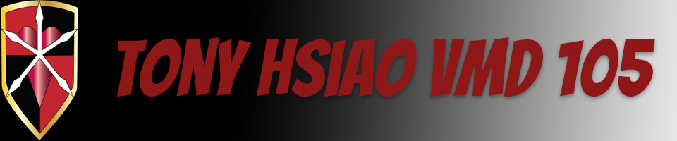

Hello there, my name is Tony Hsiao and welcome to the website for my final web-layout project for VMD105 at City College of San Francisco. I am currently taking VMD105 as it is a required course for the Digital Art Foundation vocational certificate; after I have completed that, I will concurrently pursue the Illustration and Animation certificates. I hope to become a character/game illustrator one day. I was born and raised in San Francisco and I completed my bachelor's at San Francisco State University majoring in Business Administration with a concentration in Management. After I completed my degree I spent some time working at a non-profit and a start-up company before realizing that office life is boring and very mundane. It felt to work for companies that had meaningful missions but I never felt that my heart was in it for the long term. I have always had a passion for art and illustration but previously believed studying art was not very practical but I feel that is where I want to be and CCSF offers that opportunity; so here I am. Hopefully my time here will help me find my way and where I belong.
Home | Raster | Vector | Animate | Print | Contact